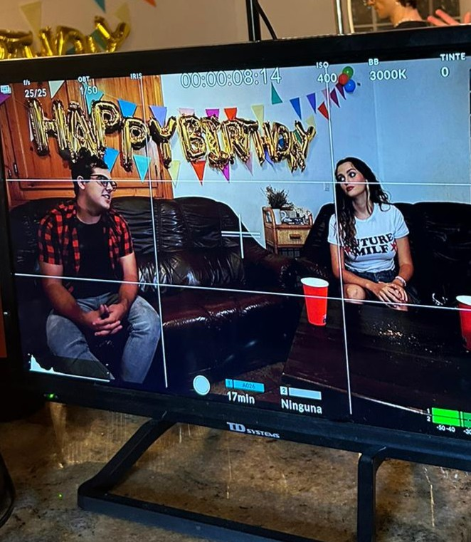

Licenciado en Doble Grado en Comuniación Audiovisual y Periodismo por la Universidad Miguel Hernández de Elche. Me especialicé en el guion y la dirección y fui realizando varios trabajos como Matarratas, ZEN o mi propia trilogía de falsos tráiler de terror y humor serie B bautizada como la Trilogía Cutrerrorífica .
En 2023, junto con mi equipo de confianza, dirigí Las espantosas aventuras de una rubia tonta y un valenciano de pueblo que se convierte en dinosaurio en un museo paleontológico 2, seleccionado en cuatro festivales y ganador a Mejor Falso Tráiler del FANTAELX 2023 y a Millor curt curt en la Marató de cinema fantàstic i de terror de Sants 2024, Barcelona.
En 2024 creé la segunda parte llamada La terrible matanza sangrienta en la que todos mueren, menos la chica, durante una fiesta nocturna de cumpleaños. The Remake, ganador a Mejor Falso Tráiler 2024 en el festival FANTAELX 2024 y ganador del Premio del Público en la Mostra de Cinema Jove d´Elx 2025. Actualmente, cuenta con 13 selecciones en festivales de todo el mundo como el Boca do Inferno 2025 en Brasil o el Festival de Cinema de Sèrie B de Cornellà (B-Retina).
Finalmente, en 2025 dirigí la tercera y última parte de la trilogía llamada La terrorífica posesión maliciosa de un fantasma con el pelo guarro que persigue a la rubia de siempre en el templo Ketemato. The final last dance of the world. En este caso, la temática pasó a ser el terror japonés y actualmente se encuentra en circuito de distribución por festivales nacionales e internacionales, aunque ya cuenta con el premio a Mejor Falso Tráiler de FANTAELX 2025, selección en el Cinematic Luxe Indie Showcase 2026, además de otras dos selecciones más.
Además de dirigir la Trilogía Cutrerrorífica de falsos tráiler, también he sido guionista y jefe de sonido en el capítulo piloto de la serie ZEN, premiado a Mejor Guion en el Festival Expojoven de León en 2025. Finalmente, hice una incursión en el cine de animación ejerciendo como Director de Foto, Montador y Supervisor de Postproducción del cortometraje de animación Stop Motion Hibernació
